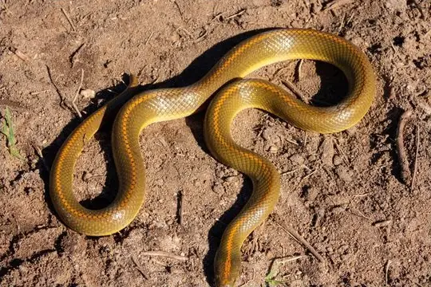
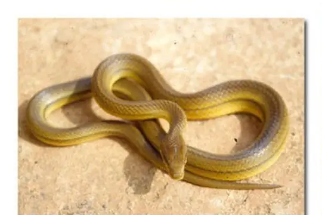
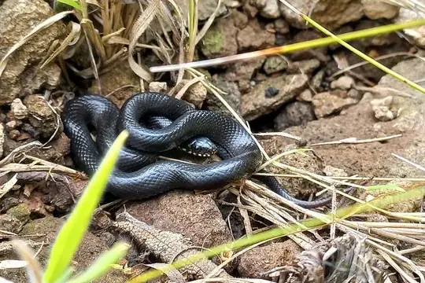
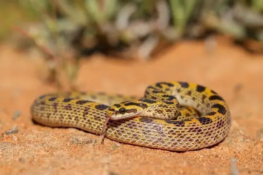
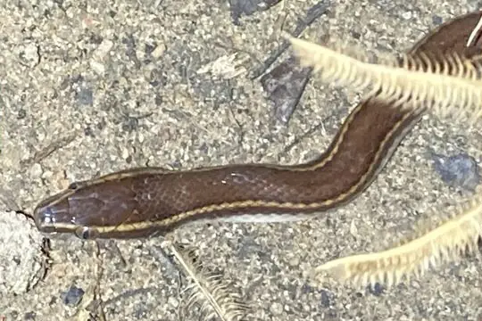
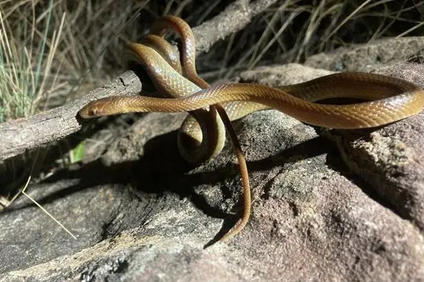
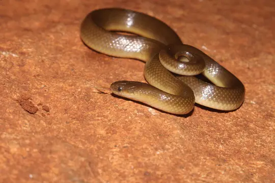

Lamprophiidae
The family Lamprophiidae (lamprophiids) has 89 species in SnakeList (none venomous), in 16 genera.
- 89species
- 89non-venomous
- 16genera
About the family
A mainly African family, also found in the Seychelles. Several groups that used to be part of it - the sand snakes, burrowing asps, shovel-snouted snakes, mole snakes and the Malagasy snakes - are now usually treated as separate families, and SnakeList lists them separately too.[1,2]
Scientists still disagree on how many families this group should be split into, so you may see these snakes placed differently in other books.[1]
Sources for this introduction
- Lamprophiidae. Wikipedia.
- Taxonomy: Lamprophiidae. Repfocus.
Information last reviewed 9 November 2026.
Species
Showing 89 species
 African Banded SnakeChamaelycus fasciatus
African Banded SnakeChamaelycus fasciatus African File SnakeLimaformosa crossi
African File SnakeLimaformosa crossi- No photo yetAngola File SnakeLimaformosa vernayi
 Angolan House SnakeBoaedon angolensis
Angolan House SnakeBoaedon angolensis
Aurora House SnakeLamprophis aurora Banded SnakePseudoboodon lemniscatus
Banded SnakePseudoboodon lemniscatus Black File SnakeGracililima nyassae
Black File SnakeGracililima nyassae- No photo yetBlotched Wolf SnakeLycophidion nigromaculatum
 Bocage’s Brown House SnakeBoaedon bocagei
Bocage’s Brown House SnakeBoaedon bocagei- No photo yetBranch’s Brown House SnakeBoaedon branchi
 Brown House Snake (capensis)Boaedon capensis
Brown House Snake (capensis)Boaedon capensis Brown House Snake (fuliginosus)Boaedon fuliginosus
Brown House Snake (fuliginosus)Boaedon fuliginosus Brown Water Snake (rufulus)Lycodonomorphus rufulus
Brown Water Snake (rufulus)Lycodonomorphus rufulus Bug-eyed House SnakeBoaedon mentalis
Bug-eyed House SnakeBoaedon mentalis
Böhme's Ethiopian SnakePseudoboodon boehmei- No photo yetCameroon Rainforest SnakeDendrolycus elapoides
 Cape Wolf Snake (capense)Lycophidion capense
Cape Wolf Snake (capense)Lycophidion capense Cape Wolf Snake (multimaculatum)Lycophidion multimaculatum
Cape Wolf Snake (multimaculatum)Lycophidion multimaculatum- No photo yetCentral-African Lined House SnakeBoaedon paralineatus
- No photo yetChad Wolf SnakeLycophidion tchadensis
- No photo yetChirio’s Wolf SnakeLycophidion chirioi
- No photo yetChristy's Banded SnakeChamaelycus christyi
 Coastal House Snake (littoralis)Boaedon littoralis
Coastal House Snake (littoralis)Boaedon littoralis Common File SnakeLimaformosa capensis
Common File SnakeLimaformosa capensis Congo File SnakeLimaformosa savorgnani
Congo File SnakeLimaformosa savorgnani
Cream-spotted Mountain SnakeMontaspis gilvomaculata- No photo yetDark-bellied HousesnakeBoaedon variegatus
- No photo yetDotted House SnakeBoaedon maculatus
 Dusky-bellied Water SnakeLycodonomorphus laevissimus
Dusky-bellied Water SnakeLycodonomorphus laevissimus Dwarf Wolf SnakeLycophidion nanum
Dwarf Wolf SnakeLycophidion nanum- No photo yetEastern Congo White-bellied Water-SnakeBoaedon upembae
 Eastern Wolf SnakeLycophidion semiannule
Eastern Wolf SnakeLycophidion semiannule- No photo yetEgbe File SnakeMehelya egbensis
 Equatorial File SnakeMehelya poensis
Equatorial File SnakeMehelya poensis- No photo yetEthiopian House SnakeLamprophis abyssinicus

Fisk's House SnakeLamprophis fiskii Flat Wolf SnakeLycophidion laterale
Flat Wolf SnakeLycophidion laterale Flat-snouted Wolf SnakeLycophidion depressirostre
Flat-snouted Wolf SnakeLycophidion depressirostre Floodplain Water SnakeLycodonomorphus obscuriventris
Floodplain Water SnakeLycodonomorphus obscuriventris Frade’s Brown House SnakeBoaedon fradei
Frade’s Brown House SnakeBoaedon fradei- No photo yetGabou File SnakeMehelya gabouensis
- No photo yetGasca's Ethiopian SnakePseudoboodon gascae
- No photo yetGuiral's File SnakeLimaformosa guirali
 Günther's Black SnakeBothrolycus ater
Günther's Black SnakeBothrolycus ater Hallowell's House SnakeBoaedon virgatus
Hallowell's House SnakeBoaedon virgatus- No photo yetHellmich's Wolf SnakeLycophidion hellmichi
- No photo yetLaurent's File SnakeMehelya laurenti
- No photo yetLined Water SnakeLycodonomorphus subtaeniatus

Long-lined House SnakeBoaedon longilineatus Matschie's African Ground SnakeGonionotophis klingi
Matschie's African Ground SnakeGonionotophis klingi Mlanje White-bellied Water-SnakeLycodonomorphus mlanjensis
Mlanje White-bellied Water-SnakeLycodonomorphus mlanjensis Mocquard's African Ground SnakeGonionotophis brussauxi
Mocquard's African Ground SnakeGonionotophis brussauxi- No photo yetMozambique Wolf SnakeLycophidion acutirostre
- No photo yetMulanje Water SnakeLycodonomorphus leleupi
 Namibian Wolf SnakeLycophidion namibianum
Namibian Wolf SnakeLycophidion namibianum Olive House Snake (inornatus)Lycodonomorphus inornatus
Olive House Snake (inornatus)Lycodonomorphus inornatus Olive House Snake (olivaceus)Boaedon olivaceus
Olive House Snake (olivaceus)Boaedon olivaceus Ornate Wolf SnakeLycophidion ornatum
Ornate Wolf SnakeLycophidion ornatum Pale Wolf SnakeLycophidion irroratum
Pale Wolf SnakeLycophidion irroratum- No photo yetParker's Banded SnakeChamaelycus parkeri
 Pemba Wolf SnakeLycophidion pembanum
Pemba Wolf SnakeLycophidion pembanum Peri-Forest House SnakeBoaedon perisilvestris
Peri-Forest House SnakeBoaedon perisilvestris Pygmy Wolf SnakeLycophidion pygmaeum
Pygmy Wolf SnakeLycophidion pygmaeum Radford's House SnakeBoaedon radfordi
Radford's House SnakeBoaedon radfordi Red-Black Striped SnakeBothrophthalmus lineatus
Red-Black Striped SnakeBothrophthalmus lineatus Red-blacked Striped SnakeBothrophthalmus brunneus
Red-blacked Striped SnakeBothrophthalmus brunneus Red-snouted Wolf SnakeLycophidion uzungwense
Red-snouted Wolf SnakeLycophidion uzungwense- No photo yetSandford's Ethiopian SnakePseudoboodon sandfordorum
- No photo yetSavanna Lesser File SnakeGonionotophis grantii
- No photo yetSeychelles House SnakeLamprophis geometricus
 Small-eyed File SnakeMehelya stenophthalmus
Small-eyed File SnakeMehelya stenophthalmus Speckled Wolf SnakeLycophidion meleagre
Speckled Wolf SnakeLycophidion meleagre- No photo yetSpotted House SnakeLamprophis guttatus
 Spotted Wolf SnakeLycophidion albomaculatum
Spotted Wolf SnakeLycophidion albomaculatum Striped House SnakeBoaedon lineatus
Striped House SnakeBoaedon lineatus
Swazi Rock SnakeInyoka swazicus Tanganyika Water SnakeLycodonomorphus bicolor
Tanganyika Water SnakeLycodonomorphus bicolor Taylor's Wolf SnakeLycophidion taylori
Taylor's Wolf SnakeLycophidion taylori Uganda House SnakeHormonotus modestus
Uganda House SnakeHormonotus modestus Unicolor File SnakeLimaformosa chanleri
Unicolor File SnakeLimaformosa chanleri Variegated Wolf SnakeLycophidion variegatum
Variegated Wolf SnakeLycophidion variegatum Western Jackson’s Wolf SnakeLycophidion jacksoni
Western Jackson’s Wolf SnakeLycophidion jacksoni Whyte's Water SnakeLycodonomorphus whytii
Whyte's Water SnakeLycodonomorphus whytii- No photo yetYellow House SnakeBoaedon subflavus

Yellow-bellied House SnakeLamprophis fuscus Boaedon bedriagae
Boaedon bedriagae Boaedon mendesi
Boaedon mendesi- No photo yetLamprophis erlangeri
 Lycophidion semicinctum
Lycophidion semicinctum
No snakes in Lamprophiidae match.
About the family Lamprophiidae
- Genera: Lycophidion 23, Boaedon 21, Lycodonomorphus 9, Lamprophis 7, Limaformosa 6, Mehelya 5, Pseudoboodon 4, Chamaelycus 3, Gonionotophis 3, Bothrophthalmus 2, Bothrolycus 1, Dendrolycus 1, Gracililima 1, Hormonotus 1, Inyoka 1, Montaspis 1.